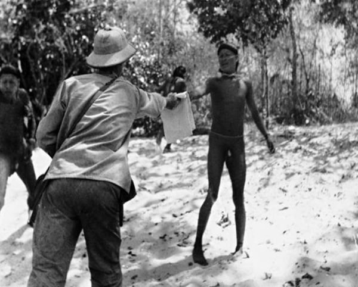
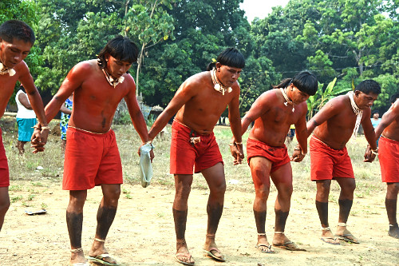
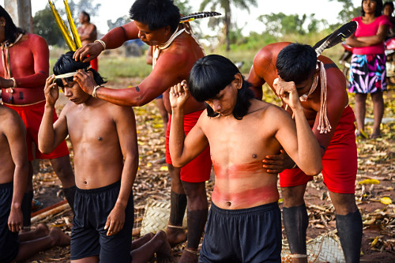
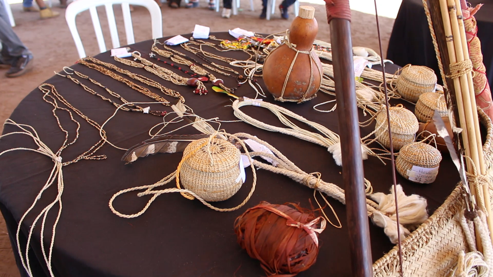

História
Xavante é um povo indígena que vive em áreas distribuídas dentro do estado de Mato Grosso, na Região Centro Oeste do Brasil, na chamada Amazônia Legal, onde habitavam a região entre os rios Araguaia e Tocantins. Os xavantes estão espalhados em 12 denominadas terras indígenas, algumas já regularizadas como reserva e outras em processo de estudo, são elas: Areões, Areões I, Areões II, Chão Preto, Marãiwatsede, Marechal Rondon, Parabubure, Pimentel Barbosa, Sangradouro/Volta Grande, São Marcos, Ubawawe e Wedezé. Vivem ainda no Noroeste de Goiás, nas colônias indígenas de Carretão I e Carretão II.
Os xavantes são guerreiros e caçadores, que se autodenominam “A’uwe Uptabi” (povo verdadeiro) e falam a língua Akwẽn/Aquém, que pertence ao tronco linguístico macro jê. Os indígenas xavantes estão divididos em dois clãs diferentes, "õwawe" (água grande) e "proza’õno" (girino), onde o casamento só é permitido entre membros de clãs diferentes.
Ao longo do século XVIII, com a descoberta de ouro na capitania de Goiás, ocorreram conflitos entre a população xavante local e os garimpeiros, bandeirantes, colonos e missionários que chegaram. Alguns xavantes reagiram violentamente, outros procuraram se integrar, e outros optaram por migrar. Os que migraram para o oeste cruzaram o rio Araguaia em algum ponto entre o final do século XVIII e o início do século XIX, enquanto os que ficaram passaram a ser conhecidos por xerentes. Mitos xavantes descrevem esse evento com a figura de um enorme boto que teria surgido no meio do rio Araguaia, assustando e separando para sempre xavantes e xerentes. A designação "xavante" teria sido, então, criada pelos não nativos para diferenciar os xavantes dos xerentes que ficaram no atual estado de Tocantins.
Os xavantes costumam pintar o corpo como preservação da cultura. Outro costume mantido é o ritual de passagem do adolescente para a vida adulta, onde o jovem permanece isolado dos demais membros da comunidade, só saindo com os mais velhos para caçar e pescar. Quando chega o momento, a orelha do jovem é furada com um pedaço de osso de onça e o furo é preenchido com um adereço de palha especial. A partir desse momento, ele passa a ser considerado adulto e volta a conviver com o restante do seu povo.


Danças e Cantos
A cultura do povo A'uwẽ Xavante é rica em rituais, cantos e danças, que funcionam como pilares da sua organização social, política e espiritual. Essas manifestações são fundamentais para a transição para a vida adulta, celebração da natureza e coesão coletiva. Os Xavantes fazem músicas em sua língua (Akwẽn) baseadas em tradições ancestrais, celebrando a natureza, os clãs e os espíritos. Fazem o uso de maracás: Instrumentos utilizados em rituais de cura e celebração para acompanhar os cantos e um dos rituais coletivos que incluem o canto é o da Lua e Sol, direcionado a elementos da natureza, frequentemente realizados à noite
Tradições e Iniciação
Os rituais Xavantes são cerimônias coletivas marcantes de passagem, força e espiritualidade, focados na iniciação masculina (Wapté) e furação de orelha, fortalecendo a cultura e os vínculos entre gerações. Eles incluem provas de resistência, como a "bateção de água", e a transição de adolescentes para guerreiros adultos aptos a caçar e casar. A medicina Xavante baseia-se no conhecimento milenar de plantas nativas, cascas e raízes para fortalecer a imunidade e o uso de plantas para limpar o sangue e depurar o organismo é uma prática comum para fortalecer o sistema imunológico, especialmente valorizada durante doenças respiratórias.
Principais Rituais Xavantes:
Wapté Nhõnhõ (Iniciação): Ritual onde adolescentes saem da casa dos pais para viverem na Casa dos Jovens (H'o) por cerca de cinco anos, aprendendo a ser guerreiros.
Darini (Iniciação Espiritual): Ritual realizado a cada 15 anos, onde jovens passam por provações físicas (calor, frio, cansaço) e recebem orientação espiritual.
Furação de Orelha (Danhono): Etapa final do Wapté, que ocorre após anos de isolamento. Os jovens furam as orelhas com osso de onça para usar o brinco de madeira (buruteihi), marcando a maturidade.
Datsi'waté (Bateção de Água): Os jovens batem continuamente na água dos rios durante semanas para endurecer o corpo e aumentar a resistência.
Corrida de Tora (Wai'rã): Corrida tradicional de revezamento que simboliza força física e união do grupo
Datsiwaiwere (Ritual de Cura): Cerimônia de cura realizada quando os remédios tradicionais não funcionam, exigindo abstinência e preparação dos homens.
Dunhore (Ritual de Caça): Preparação espiritual e física realizada antes das grandes caçadas tradicionais.
Tradições e Costumes:
Corrida com Buriti: Esporte tradicional que envolve força e resistência, onde equipes correm carregando um tronco de buriti.
Organização Social: A sociedade é dividida em grupos de idade e clãs, com forte influência dos mais velhos (anciãos).
Luta e Resiliência: A cultura xavante valoriza muito a resistência física e mental, um reflexo histórico da necessidade de manter seu território e tradições.


Arte e Pintura Corporal
A arte do povo Xavante é profundamente integrada à sua vida social, espiritual e cerimonial. Ela se expressa principalmente por meio da pintura corporal, onde é comum o uso de urucum (vermelho) e jenipapo misturado com carvão (preto). Também recolhem plumas e penas de aves da região, com destaque para as cores amarela, vermelha e branca, para serem aplicadas em cocares e adornos. E utilizam fibras naturais, como palha, cipó e buriti, para fazer cestas (peneiras e cestos de carga).
Acervo Audiovisual

Dança Xavante